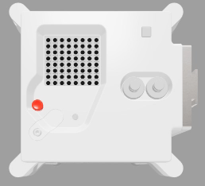
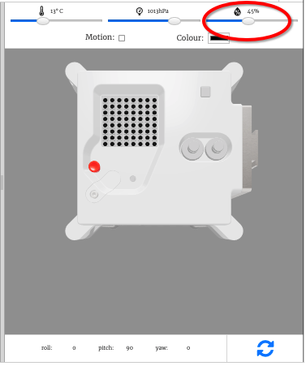

Mesurer l'humidité
Le capteur d'humidité de l'Astro Pi peut mesurer l'humidité de l'air qui l'entoure, c'est une fonction utile pour t'aider à collecter des données sur les conditions dans l'espace.

L'Astro Pi mesure l'humidité dans l'ISS en pourcentage de concentration d'eau dans l'air.
Une partie de ta mission est de contribuer à la vie quotidienne de l'équipage à bord de l'ISS, afin de leur faire savoir que l'humidité à bord de la station spatiale est dans les limites normales, cela les rassurera.
Ajoute ce code pour effectuer un relevé d'humidité :
humid = sense.get_humidity()
Cette ligne mesure l'humidité actuelle et stocke la valeur mesurée dans la variable humid.
L'humidité est enregistrée de manière très précise, c'est-à-dire que la valeur stockée aura un grand nombre de décimales. Tu peux arrondir la valeur à n'importe quel nombre de décimales. Dans l'exemple, nous avons arrondi à une décimale, mais pour avoir un autre niveau de précision remplace le nombre 1 par le nombre de décimales que tu souhaites.
humid = round(sense.get_humidity(), 1)
Pour afficher l'humidité actuelle sous la forme d'un message défilant à l'écran, ajoute cette ligne de code :
sense.show_message(str(humid))
La partie str() convertit l'humidité d'un nombre en texte afin que l'Astro Pi puisse l'afficher.
Tu peux également afficher l'humidité dans un autre message en joignant les parties de ton message avec un +.
sense.show_message( "Humidité=" + str(humid) + " %" )
Le vrai Astro Pi mesurera l'humidité autour de lui, mais tu peux déplacer le curseur d'humidité sur l'émulateur Sense HAT pour simuler les changements d'humidité et tester ton code.

Remarque : Tu te demandes peut-être pourquoi le curseur d'humidité affiche l'humidité sous forme d'un nombre entier, mais le résultat de la mesure que tu obtiens est en décimales. L'émulateur simule la légère imprécision du capteur réel, de sorte que le résultat de la mesure de l'humidité que tu vois peut être très légèrement supérieure ou inférieure à la valeur que tu as définie avec le curseur.